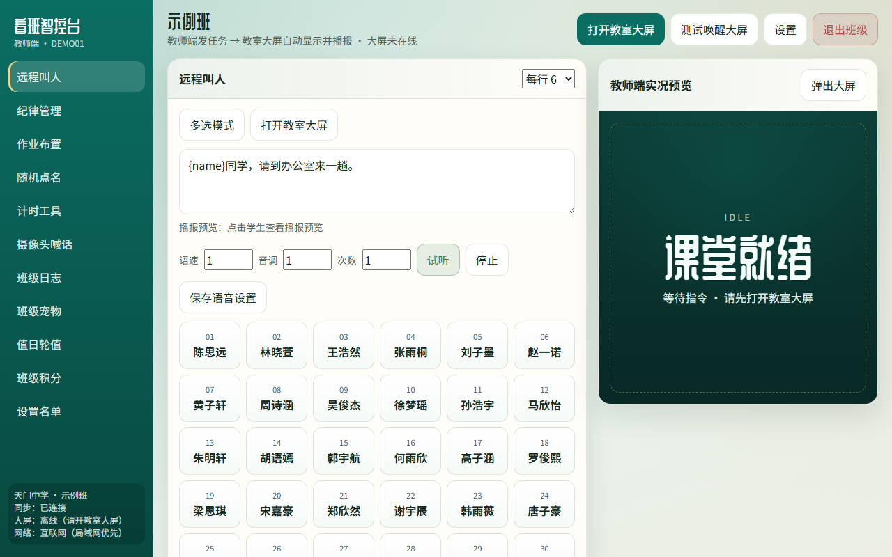
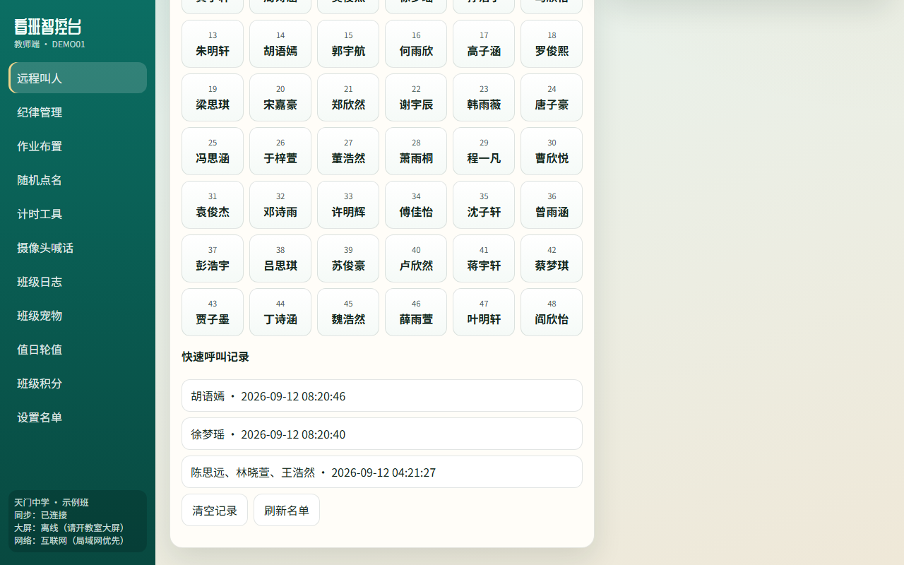
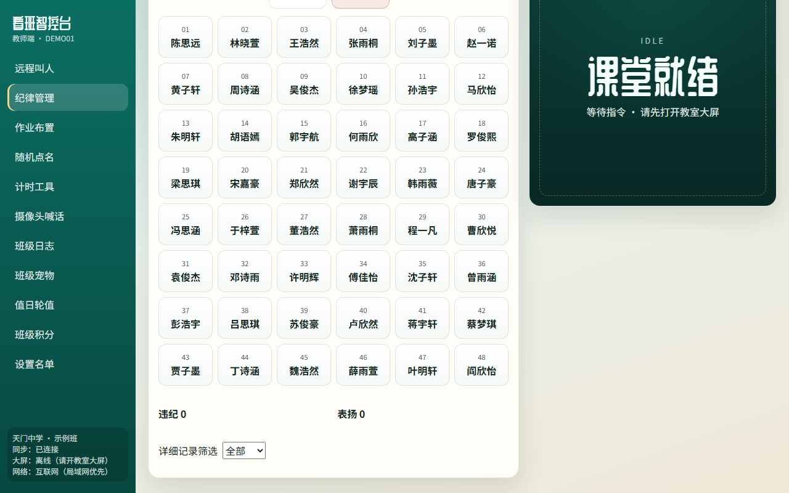
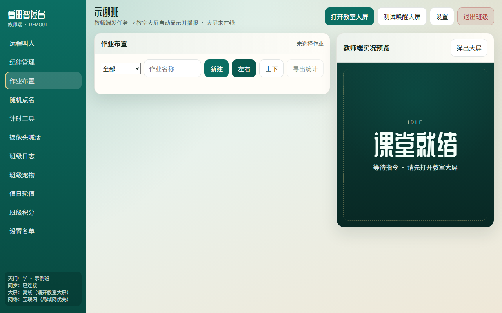
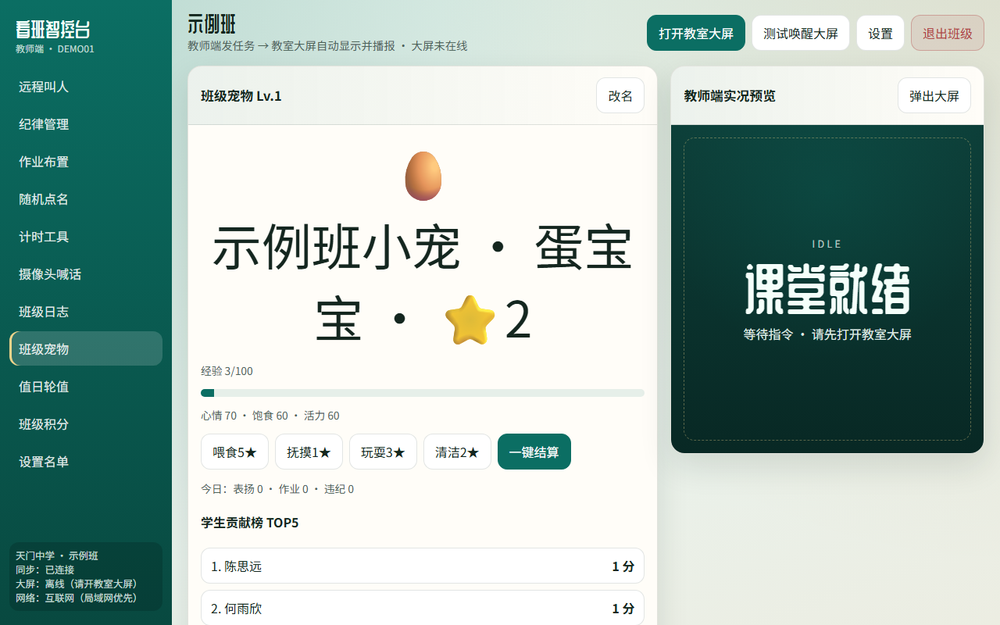
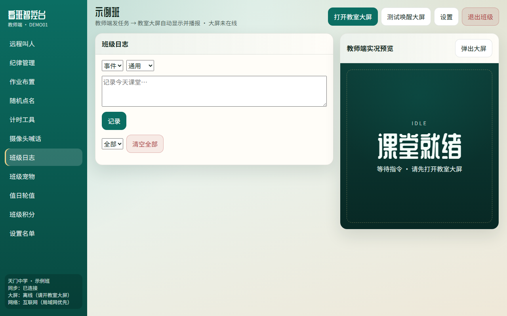
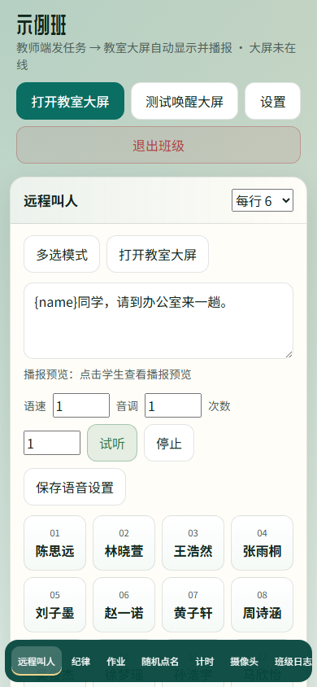
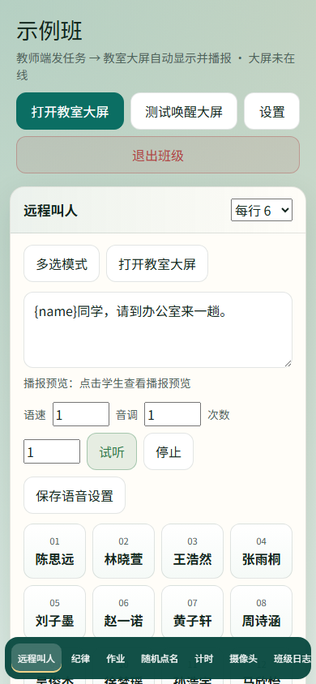

先说结论：这不是又一篇“AI 写了个 Demo”的吹嘘文。
我拿 WorkBuddy（同类 AI 编程助手也一样），用一套可复用的提示词，把一个真正能进教室用的系统搓出来了——教师端发指令，教室大屏自动显示、播报。名字叫看班智控台 Pro。
测试地址（示例班可直接试）：
http://test.zjjdg.top:5666/
演示班级：DEMO01 / 123456
很多人问我：用大模型做系统，提示词到底怎么写？我把这套流程摊开讲——从第一句到最后一版，怎么迭代，通用模板你直接抄。
目标很具体：办公室里用手机/电脑点一下，教室大屏立刻喊人、贴纪律、推作业、随机点名……大屏那边最好常驻，教师端随时连上。
技术上我没硬上复杂云原生，就是：
登录进去大概是这样：

左侧一排功能，右侧有个“教师端实况预览”，中间是当前模块。看板离线时会提醒你先开教室大屏——这点很重要，很多“远程看班”工具翻车就翻在两端没连上。
下面这套，我后来做别的小工具也在用。核心就一句话：先定产品边界，再定双端契约，再逼它给可运行切片，最后用真实场景打补丁。
这一段的价值不在“功能清单很长”，而在双端模型和可运行闭环。大模型最爱先画一堆好看页面，你不卡住“最小闭环”，后面全是废料。
我实际就是一轮一轮砸这个模板。叫人播报不完整？补队列。手机打不开大屏？改唤醒方式。群晖装不上 better-sqlite3？换成 sql.js。提示词里写“基于当前代码继续、禁止重写”，比你口头求它“小心一点”管用一百倍。
远程叫人、纪律、作业、点名、计时、摄像头喊话、宠物、值日、积分……基本都是按这个节奏长出来的。
第 1 轮：先通“叫人”。
提示词只保一件事：点学生 → 大屏出字 + 说话。通了，才有后面一切。

第 2 轮：把双端状态做诚实。
大屏离线就明说离线；同步已连接要看得见。别假装“已经发到教室了”。
第 3 轮：补课堂刚需。
纪律、作业、随机点名、计时。这些不是花活，是老师每天会点的按钮。




第 4 轮：摄像头 + 喊话。
WebRTC 远程看班、按住说话、文字喊话。这一块坑最多（HTTP 下麦克风、HTTPS、权限），提示词里要写清浏览器安全限制，不然模型会装作“已经能喊了”。

第 5 轮：运营向功能。
班级日志、宠物、值日、积分，还有管理后台看各班使用情况。不是为了堆菜单，是为了让系统在班里“住得下去”。



教室大屏端自己长这样（常开即可）：

手机也能进教师端：


下一篇我会把远程叫人和摄像头喊话拆细讲——这两块才是老师真正天天用的“远程手”。
如果你也想用 WorkBuddy / Cursor / Claude Code 手搓校内部小工具，把上面三套模板改个产品名就能开干。
测试入口再放一次：http://test.zjjdg.top:5666/
进班：DEMO01 / 123456
下一篇见：办公室里怎么把人喊到、把班看住。